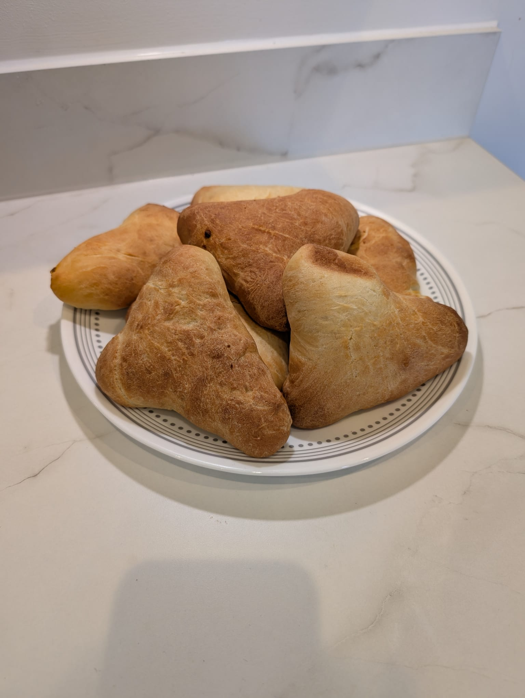

Seeni Sambol Bun
A beloved favorite featuring caramelized onion sambol within a soft, pillowy bun. The sweet and spicy balance makes this an unforgettable breakfast staple.
Star of the Oven
A beloved favorite featuring caramelized onion sambol within a soft, pillowy bun. The sweet and spicy balance makes this an unforgettable breakfast staple.
Tender spiced beef curry encased in a golden, flaky pastry shell. The aromatic blend of Sri Lankan spices creates a savory masterpiece that pairs perfectly with hot tea.


A coastal treasure featuring flaked Maldivian fish curry infused with coconut and spices. Fresh from our oven, each bite carries the essence of island seafaring traditions.